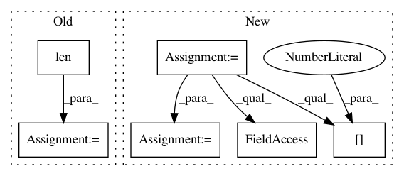

8a801031c5a5f34f5d83319aa99a9e0889bb56a1,gpflow/transforms.py,LowerTriangular,backward_tensor,#LowerTriangular#Any#,392
Before Change
def backward_tensor(self, y):
N = tf.cast(tf.sqrt(tf.size(y) / self.num_matrices), tf.int32)
reshaped = tf.reshape(y, (N, N, self.num_matrices))
size = len(reshaped)
triangular = reshaped[np.tril_indices(size, 0)].T
return triangular
def log_jacobian_tensor(self, x):
return tf.zeros((1,), settings.float_type)
After Change
print(y.shape.as_list())
N = tf.cast(tf.sqrt(tf.size(y) / self.num_matrices), tf.int32)
reshaped = tf.reshape(y, shape=(N, N, self.num_matrices))
print(reshaped, reshaped.shape.as_list())
N_not_tensor = reshaped.shape.as_list[0]
indices = np.dstack(np.tril_indices(N_not_tensor))[0]
triangular = tf.reshape(tf.gather_nd(reshaped, indices), shape=[-1])
return triangular
def log_jacobian_tensor(self, x):
return tf.zeros((1,), settings.float_type)
In pattern: SUPERPATTERN
Frequency: 3
Non-data size: 6
Instances
Project Name: GPflow/GPflow
Commit Name: 8a801031c5a5f34f5d83319aa99a9e0889bb56a1
Time: 2018-01-02
Author: art.art.v@gmail.com
File Name: gpflow/transforms.py
Class Name: LowerTriangular
Method Name: backward_tensor
Project Name: NervanaSystems/coach
Commit Name: b1e9ea48d86807382c5feca0d18a6bf71f5caa03
Time: 2019-01-03
Author: gouravr@amazon.com
File Name: rl_coach/architectures/tensorflow_components/savers.py
Class Name: GlobalVariableSaver
Method Name: restore
Project Name: asyml/texar
Commit Name: 77b1d527138ea2385284ed8eae8322c589065d3f
Time: 2018-04-26
Author: zhitinghu@gmail.com
File Name: texar/agents/seq_pg_agent.py
Class Name: SeqPGAgent
Method Name: _train_policy